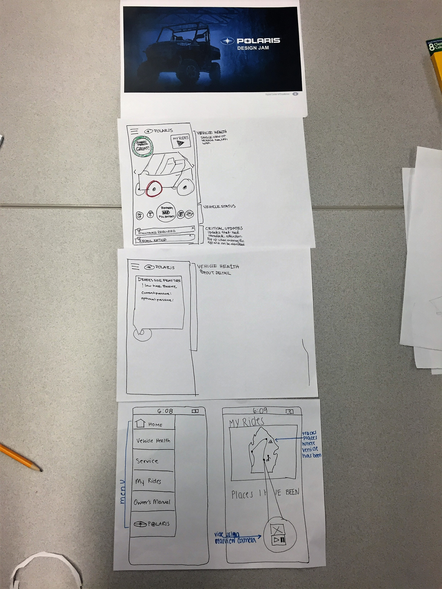

Format
3-hour design sprint
Roles
Interaction Designer
The Challenge
Based on a given persona, create a vehicle owner dashboard that addresses the user’s pain points over the vehicle’s lifespan.
Process
My team brainstormed some key features that users would want to see in an owner’s dashboard, and we decided to create an app centered around vehicle health. We listed out several key items that should be included, such as vehicle maintenance, dates of service, and access to the owner’s manual. We wireframed our app before moving into the paper prototyping phase.
Solution
Our team decided that our app would send push notifications for urgent matters, such as recall alerts. Otherwise, the user could go into the app to view key vehicle health components such as oil life and tire pressure. The app featured an interactive image of a vehicle, and users could click pieces of the vehicle to see when each part was replaced. This would update automatically when the vehicle was serviced, but the information could also be typed in by hand in order to accommodate users who prefer to self-service. Because our given persona lived in a remote area, being able to easily view maintenance dates was crucial.
Beyond serving as a tool for vehicle maintenance, we also wanted our dashboard to have a “fun factor,” so we included a feature called “My Rides,” through which users could track the places they had visited in their vehicle. They could attach dash-cam footage of their trip to a map view and save memories within the app. While we wanted to focus first on the app’s utility as a dashboard, we also took note of the fact that our user primarily took their vehicle out for family trips, so we acknowledged the fun piece of off-roading within our design.
Discussion
- Due to this project’s format, we were not able to gather feedback on our design before presenting it to the other teams. If this system were to be implemented, it would be interesting to see how users perceive the “My Rides” feature and which users gain the most from it.
- My team for this sprint was smaller than usual, but the team size allowed us to collaborate more closely and really talk through the finer points of our design. The stellar teamwork on this project led to a system that was well thought out and creative.